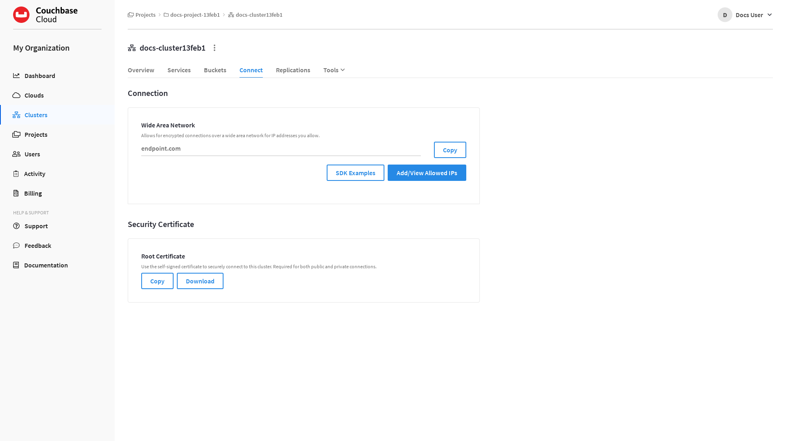
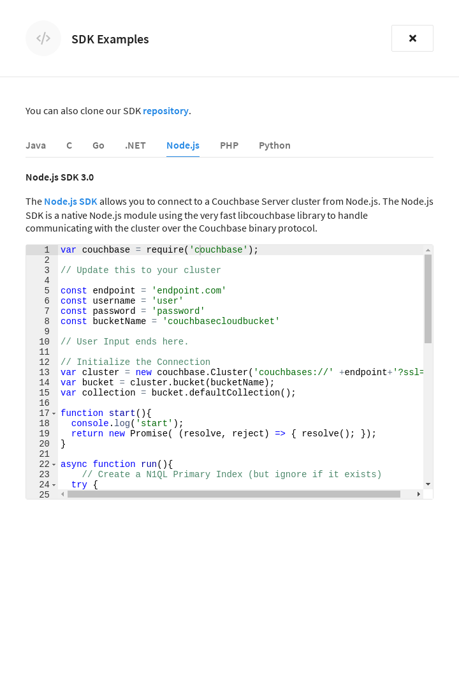

Connect to Your Cluster
Connect to your cluster using the Couchbase SDK.
|
This information is for anyone still using Couchbase Server 6.6, hosted in their own cloud provider’s VPC. It does not apply to Couchbase 7.0 or later, hosted in Couchbase’s VPC and fully managed by Couchbase. All of the information for users of Server 6.6 self-managed in their own cloud provider’s VPC, such as this page, can be accessed at this index page. |
There are several ways to connect to your cluster, but this guide specifically covers how to connect using the Couchbase SDK. This page contains instructions that will work with Couchbase’s Cloud Account and with installations in Your Cloud Account on the Public Cloud — regardless of your Capella installation type, client code remains the same.
Prerequisites
The procedures on this page assume the following:
-
You’ve completed the following steps from the Configure Access to Your Cluster page:
-
You’ve configured database access by creating a database credential. You’ll need the username and password for the database credential to connect to the cluster.
-
You’ve added your IP address to the cluster’s list of allowed IPs.
-
Download and Install the Couchbase SDK
You can connect to your cluster programmatically using the Couchbase SDK. The examples on this page use the Couchbase Node.js SDK, however there are several other supported SDK languages to choose from.
The following instructions draw from the regular Couchbase Node.js SDK installation page.
-
If you haven’t already, make sure to download and install the latest long term support (LTS) release of Node.
If you’re installing Node for the first time, we recommend using the Node Version Manager (nvm) for getting started with Node.
-
Follow the instructions for installing nvm.
-
Install the latest Node LTS release.
$ nvm install --lts
-
-
Create a Node.js project by making a directory and initializing it with
npm.$ mkdir node-couchbase-project && cd $_$ npm init -y -
Install the Couchbase Node.js SDK.
$ npm install couchbase --save
Connect to Your Cluster Using the Built-in SDK Examples
After installing the Couchbase SDK, the next step is to use the built-in SDK examples to connect to your cluster.
-
Go to the cluster’s Connect tab in the Couchbase Capella UI.
-
Go to the Clusters tab in the main navigation.
-
Find and click on your cluster.
This opens the cluster with its Overview tab selected.
-
Click the Connect tab.

In the Connection section, there are two endpoints listed: One labeled Public and one labeled Private. When connecting to the cluster over a wide area network — such as when you’re connecting to the cluster over the Internet from an application on your laptop (e.g. the scenario described in this guide) — you will use the public endpoint. When connecting to the cluster from within your cloud provider using a peering connection, you will use the private endpoint.
For the purposes of this guide, however, you will not need to copy the public endpoint. This is because the public endpoint is automatically included in the built-in SDK examples that are used later in this guide.
-
-
Click SDK Examples.
This opens the SDK Examples fly-out menu.
Each of the supported Couchbase SDK languages is represented by a tab. Under each tab, a snippet of example code is provided. The example code is pre-populated with the cluster’s public endpoint, and with a few modifications, can quickly be used for connecting to the cluster.
-
Copy the example code.
Click on the tab for your desired SDK language, and copy the example code. If you’re following the examples in this guide, click the Node.js tab, and copy the example JavaScript code.
-
Paste the example code into a text editor and update it with your connection details.
The SDK example code automatically comes pre-populated with the cluster’s public endpoint and default bucket name. However, you’ll need to update the following connection details:
-
username -
password
The
usernameandpasswordare the those of the database credential that you created when you configured database access.The
bucketNameis the name of a bucket on the cluster that you will be connecting to. The example code comes pre-populated with the name of the default bucket:couchbasecloudbucket. This bucket will suffice for the purposes of this guide, but if you choose to create a new bucket for this exercise, you’ll need to specify the new bucket’s name in the example code.Note that the bucket needs to be one which the database credential has access to. If you configured the database credential to have read/write permissions on all buckets (as recommended), then you can specify any bucket when testing out the connection.
The following is an example of a completed Node.js configuration:
var couchbase = require('couchbase'); // Update this to your cluster const endpoint = '408f6eee-c52d-4d44-a155-691f9c511931.dataplane.couchbase.com' const username = 'admin' const password = 'P@ssw0rd' const bucketName = 'couchbasecloudbucket' // User Input ends here. // Initialize the Connection var cluster = new couchbase.Cluster('couchbases://' +endpoint+'?ssl=no_verify&console_log_level=5', {username: username, password: password}); var bucket = cluster.bucket(bucketName); var collection = bucket.defaultCollection(); function start(){ console.log('start'); return new Promise( (resolve, reject) => { resolve(); }); } async function run(){ // Create an SQL++ Primary Index (but ignore if it exists) try { await cluster.queryIndexes().createPrimaryIndex(bucketName, {ignoreExists: true}); } catch (e) { } // Create and store a document try { await collection.upsert('user:king_arthur', { 'name': 'Arthur', 'email': 'kingarthur@couchbase.com', 'interests': ['Holy Grail', 'African Swallows'] }); } catch (e) { throw(e); } // Load the Document and print it // Prints Content and Metadata of the stored Document try { let getResult = await collection .get('user:king_arthur'); console.log('Got: '); console.log(getResult); } catch (e) { console.log(e); throw(e); } // Perform an SQL++ Query const options = { parameters: ['African Swallows'] }; try { let queryResult = await cluster.query('SELECT name FROM '+bucketName +' WHERE $1 in interests LIMIT 1', options); queryResult.rows.forEach((row) => { console.log('Query row: ', row) }); } catch (e) { console.log(e); throw(e); } } start().then(run).then(() => { console.log("closing..."); cluster.close();});Once you’ve finished updating the example code with your connection details, save it in your project directory, making sure to use the file extension that is appropriate for the SDK language. If you’re following the examples in this guide, save the file as
connection-script.jsin thenode-couchbase-projectdirectory that you created earlier when you installed the Couchbase Node.js SDK. -
-
Connect to the cluster.
From the project directory, run the connection script using the following command:
node connection-script.jsThe results you should expect are as follows:
Got: { cas: CbCas { '0': <Buffer 00 00 64 71 50 c3 25 16> }, value: { name: 'Arthur', email: 'kingarthur@couchbase.com', interests: [ 'Holy Grail', 'African Swallows' ] } } Query row: { name: 'Arthur' }If you received the results above, the connection was successful, and a document has been written to the bucket.
Next Steps
Now that you’ve established that you can connect to your cluster, you can move on to the next step: Interact with Data in Your Cluster.